Homework 5#
Note
All mathematical calculations are performed by hand. They are simply displayed using Markdown and \(\mathrm{\LaTeX{}}\). Python code, when used, is only used to check hand-calculations or when instructed to do so by the problem prompt.
Vectors are written in bold lower-case letters (\(\mathbf{v}\)), matrices are written in bold upper-case letters (\(\mathbf{A}\)), and scalers are written as italicized lower-case letters (\(c\)). Unless specified, all elements \(\epsilon \in \mathbb{R}\).
Answer
Final answers are formatted like this.
Consider the transient heat conduction in a rod where the heat transfer can be accurately modeled via the one-dimensional time-dependent heat conduction given by:
where \(0 \leq x \leq 1, 0 \leq t \leq 5\) and \(T(x, t)\) is the transient temperature and \(\alpha{} = 0.01\) is the thermal diffusivity. THe inital condition is specified as:
The solution of this problem is shown in the figure below for \(\alpha_{1} = 1\) and \(\alpha_{2} = 2\)
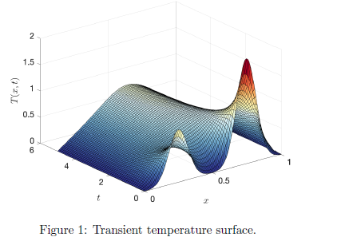
You can run the chebfun PDE solver to solve this problem by executing HW5.m from Canvas. Consider two cases: Case I: \(\alpha_{1} = \alpha_{2} = 1\) and Case II: \(\alpha_{1} = 1 \text{ and } \alpha_{2} = 3\).
Run
HW5.m. The data generated by chebfun is in discrete form in time with k = 101 snapshots and it is in continuous form in the spatial direction. Generate a matrix data of spatio-temporal temperature on a uniform grid in space generated byX=linspace(0, 1, n), where \(n = 501\). This can be accomplished byA = T(X, :). The size of matrix \(\mathbf{A}\) must be 501 \(\times\) 101. Plot the temperature surface for Case I and Case II.Plot the first three spatial modes versus \(x\) for both cases.
Plot the singular values (\(\sigma_{i}\text{'s}\) in
semilogyaxis for both cases.One criterion for reduction is to compute the percentage of “energy” captured by the PCA reduction with \(r\) modes as follows:
Find the minimum number of modes \(r\) required to have \(e(r) \geq 99\%\).
Plot the reconstructed temperature at \(t = 1, 3, 5\) for each of the cases with \(r = 1\) and \(r = 2\).
Use the spatial SVD modes of Case I for the reconstruction of the data in Case II at \(t = 1, 3, \text{ and } 5\). To this end, you need to project the data from Case II at each of the time instants to the spatial basis from Case I. Take \(r = 5, 10, \text{ and } 15\) modes from Case I and plot the true temperature along with the reconstructed one. Explain the observations you make in these results.
Note
The function f from SolveState.m is equal to 0.
Part 1 Calculations#
The following matlab code was used to plot the results. a_1 and a_2 were changed accordingly to the Case.
clc
clear all
close all
LW = 'LineWidth';
set(0,'defaulttextinterpreter','latex')
%% --------- Space-Time Discretization ----------
Domain = [0 1];
t = 0:.05:5;
x = chebfun('x',Domain);
n=501;
alpha = .01;
beta = 0;
c = 0;
a_1 = 1;
a_2 = 2;
%% --------- Solve the PDE ----------
T0 = (a_1*exp(-100*(x-.25).^2)+a_2*exp(-100*(x-0.75).^2));
T=SolveState(t,T0,alpha,beta,c);
X = linspace(0,1,n)';
A = T(X,:);
%% --------- Plot the result ----------
% Set up the figure
figure
hold on
% Create the surface plot
surf(T, 'EdgeColor', 'k')
% Customize the plot
shading interp
colormap jet
view([-30, 30])
xlabel('Space (x)')
ylabel('Time (t)')
zlabel('Temperature (T(x,t))')
title('Transient Temperature Surface')
% Additional customization for aesthetics
axis tight
grid on
box on
% Add a color bar to indicate the temperature scale
colorbar
Answer
Case I
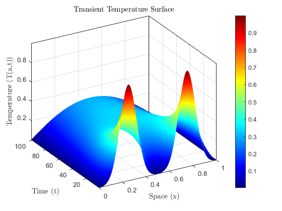
Case II
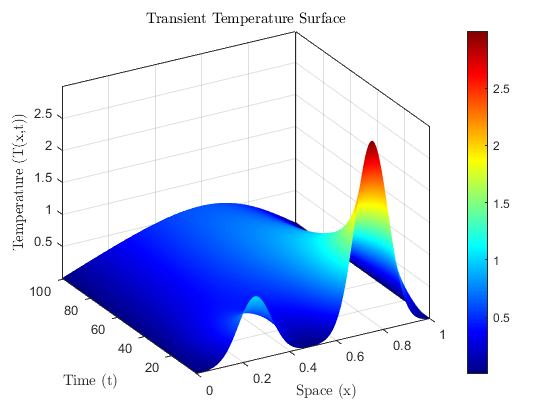
Part 2 Calculations#
The following code was used to plot the results with \(\alpha\) adjusted accordingly.
% Extract the first three spatial modes
mode1 = A(:, 1); % First spatial mode
mode2 = A(:, 2); % Second spatial mode
mode3 = A(:, 3); % Third spatial mode
% Plot the first three spatial modes versus x
figure;
hold on;
plot(mode1, 'r');
plot(mode2, 'g');
plot(mode3, 'b');
hold off;
xlabel('Space (x)');
ylabel('Temperature (T)');
title('Case I: First Three Spatial Modes vs. x');
legend('Mode 1', 'Mode 2', 'Mode 3');
grid on;
Answer
Case I
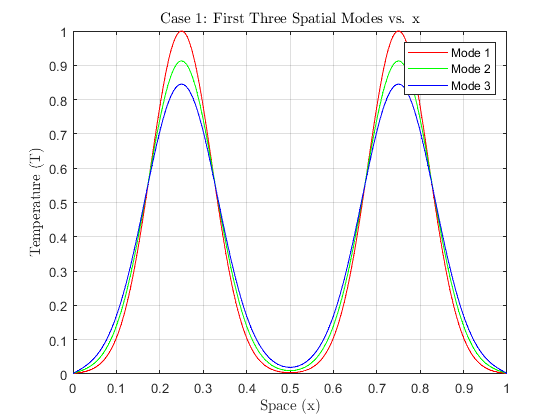
Case II
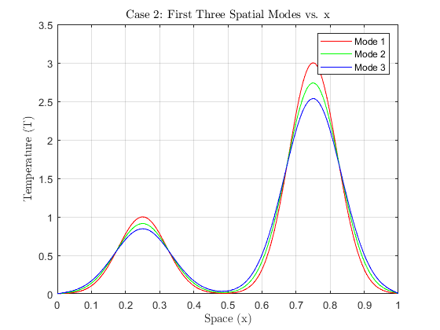
Part 3 Calculations#
The following code was used to plot the results with \(\alpha\) adjusted accordingly.
% Take the SVD
[U, S, V] = svd(A);
% Plot the result
semilogy(diag(S), 'k');
xlabel('r');
ylabel('Singular Value vs r');
title('Case I: Singular Values');
% Additional customization for aesthetics
axis tight
grid on
Answer
Case I
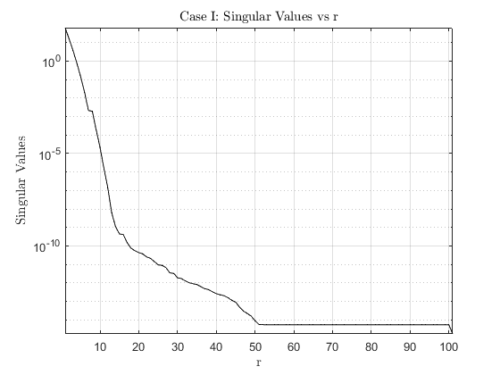
Case II
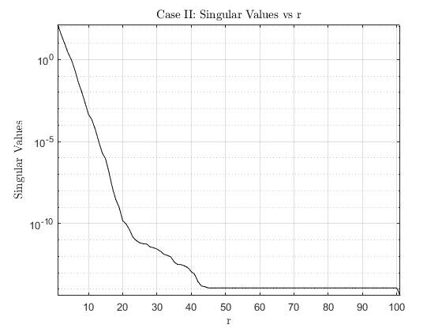
Part 4 Calculations#
The following code was used to plot the results with \(\alpha\) adjusted accordingly.
% Plot the result
plot(cumsum(diag(S))/sum(diag(S)), 'k')
xlabel('r');
ylabel('Cumulative Sum');
title('Case I: Cumulative Sum of Singular Values vs r');
% Additional customization for aesthetics
axis tight
grid on
Answer
Case I
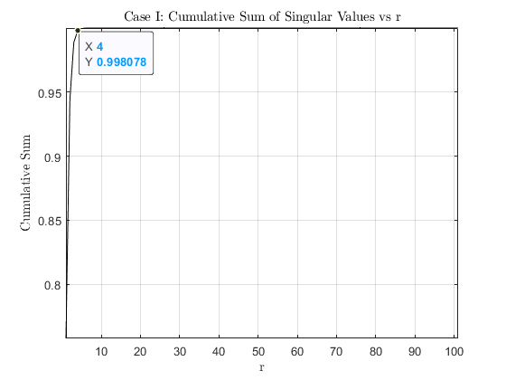
Case II
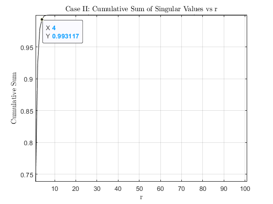
Part 5 Calculations#
The following code was used to plot the results with \(\alpha\) adjusted accordingly.
r = [1 2];
Aapprox = U(:, 1:r(1))*S(1:r(1),1:r(1))*V(:,1:r(1))';
% Extract the first three spatial modes
mode1_approx = Aapprox(:, 1); % First spatial mode
mode3_approx = Aapprox(:, 3); % Second spatial mode
mode5_approx = Aapprox(:, 5); % Third spatial mode
% Plot the first three spatial modes versus x
figure;
hold on;
plot(mode1_approx, 'r');
plot(mode3_approx, 'g');
plot(mode5_approx, 'b');
hold off;
xlabel('Space (x)');
ylabel('Temperature (T)');
title('Case I: ROM r = 1 vs. x');
legend('Mode 1', 'Mode 3', 'Mode 5');
grid on;
Answer
Case I
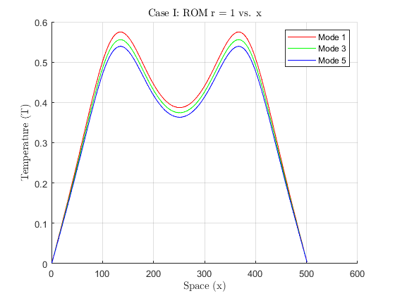
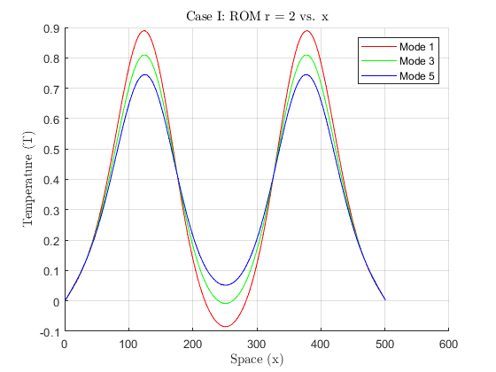
Case II
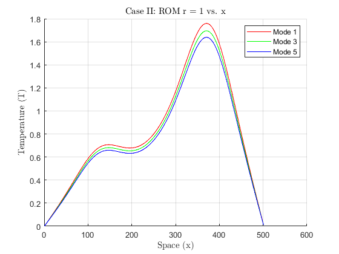
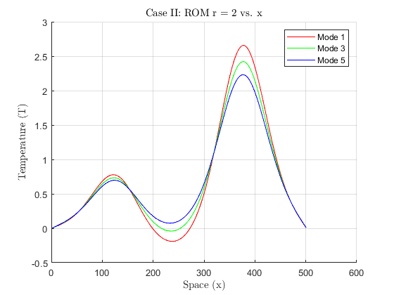